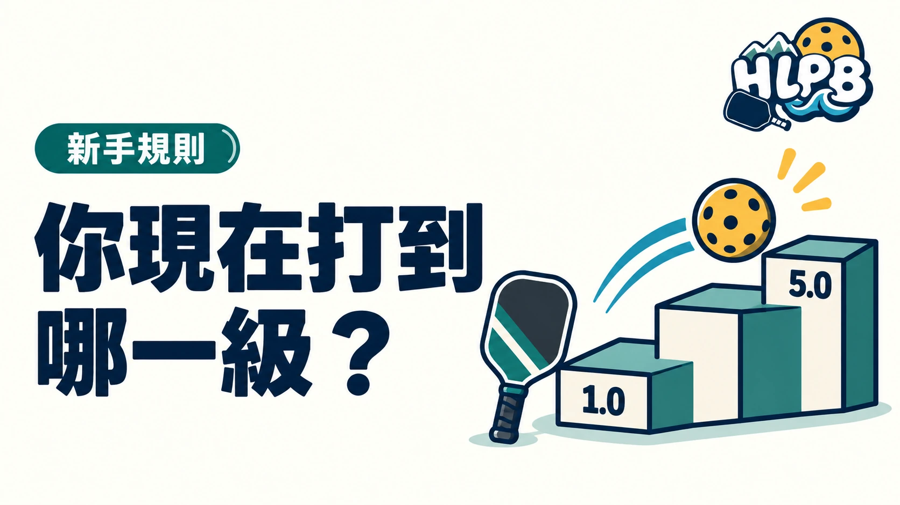

← 文章列表你現在打到哪一級？匹克球 1.0–5.0 分級指南
參考 USA Pickleball 技能分級，從回合穩定度、落點與雙打配合判斷適合自己的球局。這是自評參考，不是正式賽事評分。

新手規則
先看你能不能穩定打完一回合
USA Pickleball 的技能分級可幫球友找程度接近的球局。它看的是擊球穩定度、落點、場上位置與策略，不是打了幾個月就自動升級。第一次接觸匹克球，先從基本規則與對打開始，不必急著填分數。
點選級別，查看技能重點與延伸閱讀。
1.0
剛開始認識
- 經驗：剛接觸匹克球，實際上場經驗很少。
- 規則：需要引導，正在認識基本玩法。
2.0
練習基本動作
- 擊球：在引導下練習基本技巧。
- 對打：穩定度與場上判斷仍在建立。
2.5
剛能來回
- 對打：能和程度相近的球友短暫來回。
- 計分：知道基本喊分方式。
- 練習：讓發球與回球更穩定。
3.0
開始穩定
- 發接球：多半能把球打進場內。
- 網前：開始練小球與上網時機。
- 練習：減少失誤，試著處理第三拍。
3.5
懂得配合
- 落點：較能調整發接球深度與速度。
- 網前：開始控制小球高度並判斷可進攻的球。
- 雙打：會留意搭檔位置，一起移動。
4.0
能運用策略
- 擊球：正反手與網前球更穩定。
- 第三拍：能有意識地選擇打法與落點。
- 策略：會依對手與場上位置調整。
4.5
打法更完整
- 球路：能控制速度、旋轉與落點。
- 應對：能處理快慢節奏並創造進攻機會。
- 比賽：能依對手與搭檔調整戰術。
5.0
高階競賽
- 技術：各種球路都能穩定運用。
- 壓力：比賽中仍能執行進階打法。
- 表現：持續的競賽成績也是參考。
文章連結是 HLPB 的分階段閱讀建議，不是官方升級門檻。規則、戰術與比賽心態可以隨練習持續複習。
自己怎麼選球局？
先看自己能否穩定發球、接發球、和搭檔輪轉，再挑標示「新手」或「休閒」的球局。第一次跟團，不確定程度時直接告訴開團者自己的經驗，比硬填一個分數更有用。可以從花蓮揪打球入口看各球局的報名方式。
這是正式評分嗎？
不是。USA Pickleball 明確區分技能等級與依已確認比賽結果建立的正式評分。自評適合找球友或安排練習；參賽組別請看各主辦單位公告，不要只憑這篇文章判定資格。想從零開始，可先看新手區；有意參賽再查花蓮賽事資訊。
資料依據：USA Pickleball 技能分級與球員評分說明。
最後查證：2026-10-11｜資料來源：USA Pickleball 技能分級與球員評分說明
返回文章列表